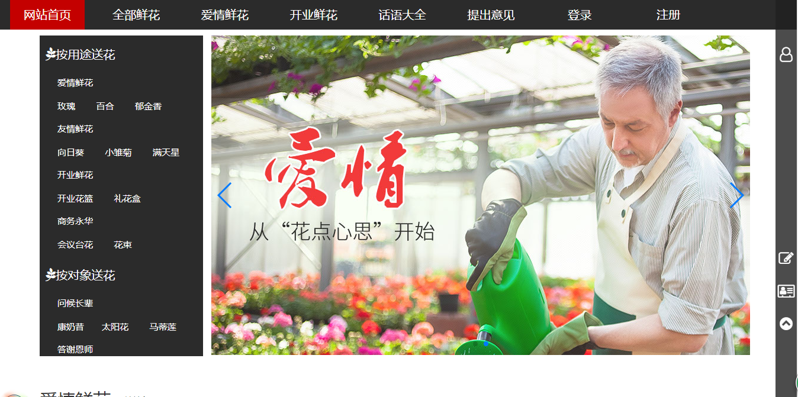
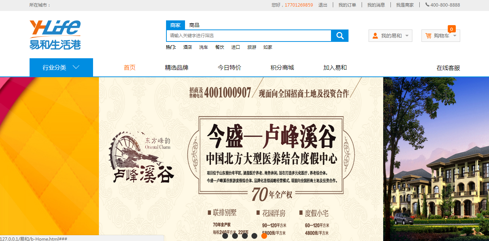
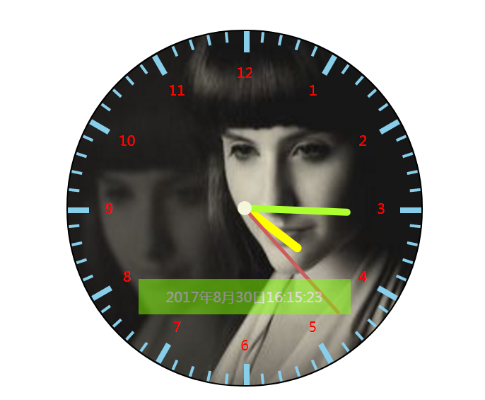

善于学习，经常学习能人编写前端的博客，有较强的沟通能力，并且一直想扩充自己的前端技术。
2016年6月28日
开启了我的前端之路
姓名丨卢思源
年龄丨
手机丨15538377105
邮箱丨lvy993@163.com
GitHub丨
点击跳转
基本技能丨HTML5/css3
javaScript/JQuery
bootstrap开发框架
熟悉PHP/ajax数据交互
专业技能
语言
HTML(5)
CSS(3)
Javascript
PHP
技术
ajax
canvas
jsonp
Git
框架
bootsrap
JQery
anjular.js
编程思想
标签语义化
响应式设计
W3C标准
作品集

仿鲜花网站
主要技术丨
html5/css3/bootstrap
项目简述丨
鲜花商城、实现首页及其他页面间的跳转展示
项目收获丨
使自己对bootstrap框架有了进一步了解，在布局方面更加熟练，更快的实现网页效果。
项目地址丨
点击图片

仿易和商城
主要技术丨
html5/css3/JavaScript
项目简述丨
易和商城各级页面的展示，
项目收获丨
使自己在布局方面更加熟练，对于JavaScript有更深的感触。
项目地址丨
点击图片

常用前端效果
主要技术丨
css3/JavaScript/canvas
项目简述丨
canvas时钟、放大镜效果
项目收获丨
对canvas有进一步的加深了解学会了不少技巧。对h5动画有更好的体验
项目地址丨
点击图片
demo效果丨
放大镜
时钟
‹
›
关于我
我是一个认真负责的人
愿意接触新技术，希望扩充自己的前端知识
我相信只要努力，就不会原地踏步
乐意交流，能快速融入团队
电话丨15538377105
邮箱丨lvy993@163.com